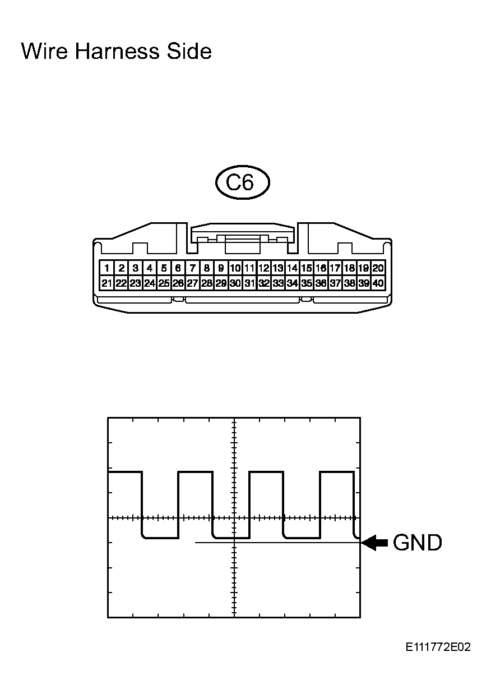
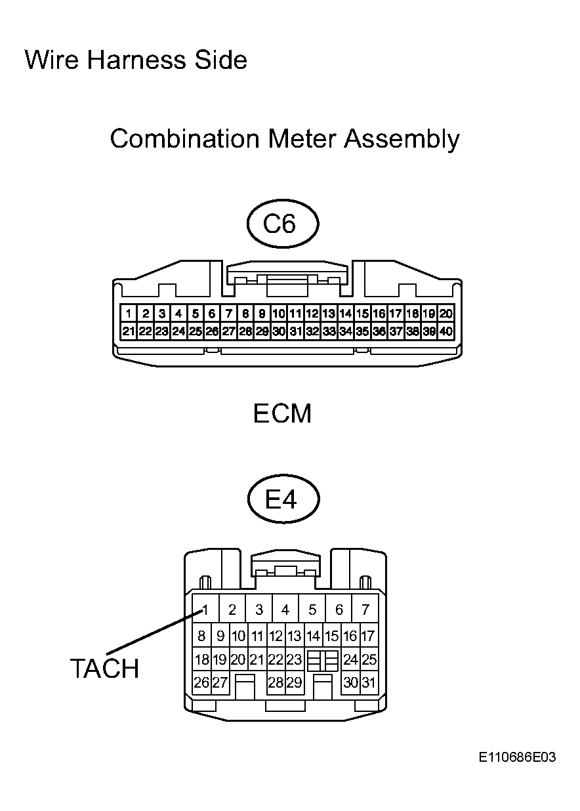

Inspection Procedure
HINT:
When using the intelligent tester, start from *1. When not using the intelligent tester, start from *2.
- READ VALUE OF INTELLIGENT TESTER (ENGINE SPEED SIGNAL)*1
- Check the DATA LIST for proper functioning of the engine speed signal.
ECM
DATA LIST - ECMItem Measurement Item / Range (Display) Normal Condition Diagnostic Note ENGINE SPD Engine speed / Min.: 0 rpm, Max.: 16,383 rpm Idling: 650 to 750 rpm - OK:
Engine speed display on the tester is almost the same as the actual engine speed.
NG : GO TO ENGINE CONTROL SYSTEM (1NZ-FE) -- xB
OK : Go to Next Step
- Check the DATA LIST for proper functioning of the engine speed signal.
- CHECK COMBINATION METER ASSEMBLY*2
- Disconnect the C6 meter connector.
- Using an oscilloscope, check the signal waveform of the meter.TESTER CONNECTION VEHICLE CONDITION
Tester Connection Tool Setting Vehicle Condition C6-26 - Body ground 5 V/DIV., 10 msec./DIV. Engine idle speed OK:
As shown in the illustration.
OK : REPLACE COMBINATION METER ASSEMBLY

Courtesy of © TOYOTA, LICENSE AGREEMENT TMS1002NG : Go to Next Step
- CHECK WIRE HARNESS (COMBINATION METER - ECM)
- Disconnect the C6 meter connector.
- Disconnect the E4 ECM connector.
- Measure the resistance of the wire harness side connectors.
Standard resistance
TESTER CONNECTION SPECIFIED CONDITIONTester Connection Specified Condition C6-30 - E4-1 (TACH) Below 1 Ω C6-30 - Body ground 10 kΩ or higher
NG : REPAIR OR REPLACE HARNESS AND CONNECTOR

Courtesy of © TOYOTA, LICENSE AGREEMENT TMS1002OK : REPLACE ECM